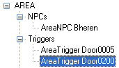
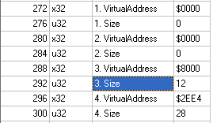

The Structorian script is a text file in the ANSI codepage. The file is processed as a sequence of tokens. Whitespace characters (spaces, tabs and line breaks) are used to separate tokens, but carry no semantic value.
Structorian scripts may include end-of-line comments. Like in C++, a comment starts with the characters // and continues till the end of the line.
The main token types used in Structorian scripts are strings and numbers.
Strings can be specified "as is", without any delimiters, if they start with one of the following characters:
'A'..'Z', 'a'..'z', '_', '0'..'9', '-'
and the characters after the first are in the following set:
'A'..'Z', 'a'..'z', '_', '0'..'9', '+', '-', '*', '/', '!', '<', '>', '&', '|', '.'
If a string contains other characters (for example, spaces), it must be enclosed in parentheses or quotation marks. By convention, expressions are enclosed in parentheses, and user-visible strings (like field tags) are enclosed in quotation marks. However, the parsing code handles both cases in the same way. No means are provided for escaping quotation marks, so if you need to have a field tag containing quotation marks, it should be enclosed in parentheses.
The following lines are examples of valid strings:
Signature "Size of header in paragraphs" (RawData + Parent.ExportDirVA - VA)
Numbers can be specified in decimal or hexadecimal form. Hexadecimal numbers are prefixed with either $ or 0x. The following lines are examples of valid numbers:
256 0xFF $1234
The top-level elements of scripts are called blocks. Currently there
are four types of blocks: struct, enum, alias
and include.
A struct block has the following syntax:
[attributes] struct [attributes] structName [attributes]
{[field]...}
structName = string
The string following the struct keyword is the name of the structure. The name is case-insensitive and must be unique within the structure file.
The attributes declaration has the following syntax:
[attrName[=attrValue][,attrName[=attrValue]]...]attrName = string
attrValue = string
If the attribute value is omitted, it is assumed that the value of the attribute is "1". Attribute names are case-sensitive. All attribute declarations for a structure or field are merged, and the location of the attribute is irrelevant. It is allowed to specify the same attribute multiple times, however, only the latest specified value is actually used.
Only the attributes supported by the respective block or field type can be used in an attributes block. Using other attributes is an error.
The following lines are examples of valid structure blocks. These definitions are equivalent.
[hidden] struct TestStruct { u16 TestField; }
struct [hidden=1] "TestStruct" { u16 TestField; }
A field declaration has the following syntax:
[attributes] fieldType [attributes] [defaultAttribute] [attributes]
;fieldType = string
defaultAttribute = string
The declaration of field attributes has the same syntax as the declaration of the structure attributes.
fieldType must be either one of the built-in field types or one of the aliases defined prior to the definition of the structure using the alias.
defaultAttribute specifies the value of the default attribute of the
structure. The default attribute depends on the field type. For most visible
field types, the default attribute is tag.
The declaration of a container field, which contains other fields, has the following syntax:
[attributes] fieldType [attributes] [defaultAttribute] [attributes]
{[field]...}
The following lines are examples of valid field declarations. These definitions are equivalent. The preferred form is the first one.
[readonly] u16 Signature; u16 [readonly=1, tag="Signature"]; u16 (Signature) [readonly="1"];
The following container field declarations are also equivalent. Again, the first form
is preferred. Note that expr is the default attribute for the if field.
if (PESignature == "PE") { message "Found a PE header"; }
[expr=(PESignature == "PE")] if { message (Found a PE header); }
An enum block has the following syntax:
[attributes] enum [attributes] enumName [attributes]
{constName[=constValue][,constName[=constValue]]...}
enumName = string
constName = string
constValue = number
Names of enum types are case-insensitive and must be unique within the file. Names of constants within an enum are not required to be unique, unless the enum is declared with the [global] or [globalmask] attribute (described below).
If the value for an enum constant is not specified, the default value is used. The default value is 0 for the first constant of the enum, or the value of the previous constant incremented by one for the following constants. It is allowed to have several constants with the same value in an enum.
The following is an example of an enum declaration:
[global] enum TestEnum { ZERO, FOUR=4, FIVE, SIX, ELEVEN=0xA, TWENTY=$14 };
Aliases allow you to create your own data types, derived from one of the standard Structorian data types. When you define an alias, you specify the name of the derived type, the name of the base type and the set of attributes that should be applied to the base type.
An alias has the following syntax:
[attributes] alias [attributes] baseType [attributes] derivedType
;baseType = string
derivedType = string
Type names are case-insensitive and must be unique. You may not define an alias with the same name as the name of a built-in type.
The following is an example of an alias declaration:
alias str [len=8] resref;
When such an alias is defined, the following field declarations are equivalent:
str [len=8] Signature; resref Signature;
Attributes specified in the field declaration of an alias type override the attributes specified in the alias declaration. Therefore, the following definitions are equivalent:
str [len=16] Signature; resref [len=16] Signature;
An include declaration allows you to include the contents of another structure file in the current file. It has the following syntax:
include fileName
;
fileName = string
If fileName is not a full pathname, it is treated as a pathname relative to the file containing the include declaration.
Recursive includes are not allowed. Struct and enum names must be unique within all included files. Therefore, if the file A has a definition of the structure S and the file B also has a definition of the structure S, and B is included in A, a duplicate structure name error will be reported.
The following attributes can be specified for struct blocks:
filemask=string
Specifies the files for which the structure is applied by default. When a file is opened and the structure definition file is not loaded, or when a file name is specified on the command line, Structorian scans its home directory and all its subdirectories for structure definition files (*.strs). It tries to load all those files, and as soon as it finds a structure with [filemask] matching the name of the data file, it loads the structure definition file containing that structure and applies it at the offset 0 of the data file.
The value of this attribute is a standard DOS file mask or a list of file masks separated with semicolons.
Example:
[filemask="t-hist.$*"] struct "History file 2603"
hidden=1|0
Structures for which the [hidden] attribute is set are not shown in the "Select structure" dialog.
preload=1|0
This attribute controls the structure loading order. Normally, Structorian loads the data for a structure only when it is selected in the structure tree (or shown in the table view). Before the structure is loaded, it is shown as just a name in the tree. The [+] sign is shown before it if the structure contains child fields.
If the [preload] attribute is specified, when a structure is loaded, its immediate children are loaded as well. (The preloading does not go deeper: if the immediate children have the [preload] attribute, the grandchildren are not loaded at the same time.) The [preload] attribute is helpful when the child structures can have varying names (the include [replace] field or the nodename field is used), or when the presence of children in the child structures is determined dynamically. In these cases, using [preload] allows to reduce the number of visible changes happening in the structure tree as the structures are loaded.
tableview=1|0
If the [tableview] attribute is specified, the table view for the structure is opened automatically when the structure is selected. (If there is already a table view open when the structure is selected, it is not replaced.) The [tableview] attribute is convenient for structures that are best viewed in the table view - structures that have few fields and a large number of instances in the file.
The following attributes can be specified for enum blocks:
global=1|0
If the [global] attribute is specified, all the constants in the enum are registered as global variables. This allows to use the constants in expressions.
Example:
[global] enum PEResourceType { RT_CURSOR=1, RT_BITMAP, RT_ICON, RT_MENU } ... enum16 ResType [enum=PEResourceType]; ... switch (Parent.ResType) { case (RT_BITMAP) { child BITMAPINFOHEADER [offset=ResOffset]; } case (RT_MENU) { child MENUHEADER [offset=ResOffset]; } ... }
globalmask=1|0
If the [globalmask] attribute is specified, all the constants in the enum are registered as global variables with values equal to the respective bit masks. So, for a constant with value 0, the global with value 1 is registered, for constant 1 - global 2, for constant 2 - global 4, and so on. This allows to use the constants as bit masks in expressions.
Example:
[globalmask] enum DialogStyle { DS_ABSALIGN, DS_SYSMODAL, DS_SETFONT=6, ... } ... set32 dwStyle [enum=DialogStyle]; if (dwStyle & DS_SETFONT) { ... }In this example, the value of the global variable DS_SETFONT is 32 (26).
The [globalmask] and [global] attributes are mutually exclusive: if both are specified, only the globalmask is actually processed.
inherit=enumName
When the [inherit] attribute is specified, all the constants in the enum enumName are added to the enum. The enum enumName must be defined earlier in the file. Note that if the enum enumName does not have the [global] or [globalmask] attribute, the constants in it are not registered as globals, even if the inheriting enum does have one of these attributes. It is allowed to specify [inherit] multiple times, to inherit constants from multiple enum definitions.
Example:
enum WindowStyle { WS_TABSTOP=16, WS_GROUP, ... } [inherit=WindowStyle] enum DialogStyle { DS_ABSALIGN, DS_SYSMODAL, ... }
The following attributes are common for all field types:
tag=string (default attribute)
The field tag is its name that is shown to the user. It is shown in the field view and in the column captions of the table view. For hidden fields, the tag value is ignored. If the tag doesn't contain spaces or other characters that require string quoting, it can also be used to refer to the field in expressions. If the tag is not specified, the default tag "Unknown" is used.
id=string
The field ID is used to refer to the field in expressions. It should be specified only if the tag contains spaces or other characters that require string quoting.
Example:
i32 "BIFF count" [id=BIFFCount];
hidden=1|0
Fields that have the [hidden] attribute are not shown to the user. This attribute can be used for various marker or offset fields.
Example:
[hidden] str [len=2] PESignature; if (PESignature == "PE") { child PEHeader [offset=NewHdrOffset]; }
readonly=1|0
You can set a [readonly] attribute on a field to disallow editing this field. This can be helpful for fields that cannot be changed without corrupting the structure of the file, like various offset fields.
Integer fields are probably the most commonly used field types in Structorian. The data size of the field is encoded in the field name, so every integer type is actually three separate types, one for each data size (8, 16 and 32 bits). All integer fields can be used in expressions.
The following integer field types are supported:
| i8, i16, i32 | Signed decimal numbers |
| u8, u16, u32 | Unsigned decimal numbers |
| x8, x16, x32 | Hexadecimal numbers |
| bits8, bits16, bits32 | Binary numbers |
| enum8, enum16, enum32 | Enums |
| set8, set16, set32 | Sets |
Integer fields can also be used within bitfields (described in detail below, with examples). For fields within bitfields, the following attributes must be specified:
frombit=number
Starting bit of the value. Must be within range from 0 to the size of the containing bitfield minus one.
tobit=number
Ending bit of the value. Must be within range from the [frombit] value to the size of the containing bitfield minus one. For a value that occupies 1 bit, the [frombit] and [tobit] values should be equal.
For i, u, x, and bits fields no other attributes are supported. The i, u and x fields are shown as decimal or hexadecimal numbers, and the bits fields are shown as a sequence of binary digits with the specified size. For enum and set fields, however, an additional attribute is required:
enum=enumName (required)
Specifies the name of the enum used to interpret the value. It is not required that the enum should be defined before the field declaration in the file.
When an enum field is loaded, Structorian searches the enum definition for a constant that has a value equal to the value loaded from the data file. If such a constant is found, the name of the constant is displayed. If the constant is not found, the loaded value is shown as a number and highlighted with the unknown data color.
When a set field is loaded, Structorian loops through all nonzero bits in the loaded value. For each nonzero bit, it searches for a constant with the value equal to the index of the bit. If the constant is found, its name is appended to the displayed field value. Otherwise, Structorian adds "<bitN>" to the displayed field value, where N is the index of the bit, and highlights the value with the unknown data color.
This is best illustrated by an example. Consider the following definitions:
enum WorldMapAreaFlags { Visible, "Can be visited"=2, Visited } ... set32 Flags [enum=WorldMapAreaFlags];If the value loaded from the data file is equal to 0, Structorian will just show an empty value in the cell, since no bits are set.
If the loaded value is 1, Structorian will show "Visible". The bit with the index 0 is set, so Structorian displays the name of the constant with the value 0.
Now suppose the loaded value is 7. The bits with the indexes 0, 1, 2 are set in the value. However, there are only constants with values 0 and 2; there is no constant for the value 1. Therefore, Structorian will display "Visible, <bit1>, Can be visited" and highlight the field in blue.
A string is a sequence of characters that either has a fixed length (static or calculated as a result of an expression) or is terminated with a null byte. Structorian supports both ASCII and Unicode strings. String values can also be used in expressions. Details on using strings in expressions are described below, in the section on expression syntax.
The following string types are supported:
| str | ASCII string |
| cstr | Null-terminated ASCII string |
| wstr | Unicode string |
| char | ASCII character (alias for str [len=1]) |
| wchar | Unicode character (alias for wstr [len=1]) |
The following attribute is common to all string types:
len=expression
Specifies the length of the string in characters. If this attribute is not specified, the string continues until the following null character or until the end of file.
Actually, both str and cstr fields will read as many bytes as specified by the [len] attribute, and will stop at the first null character encountered. The only difference between them is their behavior when editing. For a str field of length N, it is allowed to enter exactly N characters. On the other hand, for a cstr field of length N, only N-1 characters can be entered, and the Nth character will always be the terminating null byte. wstr fields behave like str fields, and do not enforce the terminating null character.
Besides integer and string fields, Structorian supports the following visible field types:
| float | Single precision (4-byte) floating point number |
| double | Double precision (8-byte) floating point number |
| unixtime | Unix time value (number of seconds since 01 Jan 1970) |
| dosdatetime | DOS date/time value (two 2-byte numbers, one containing the date, the other - the time) |
| message | Text message |
| error | Error message (alias for message [error=1]) |
| calc | Calculated field |
The float, double, unixtime and dosdatetime fields do not require any attributes.
The message field doesn't actually load any data from the file. It allows you to show a text message as a structure field (for example, to show an error message if the data loaded from the file doesn't match a signature required by the structure).
The following attributes apply to the message field:
text=string (required, default attribute)
The text that is shown to the user.
error=1|0
If the [error] attribute is set, the message text is highlighted with the red font color. If the attribute is not set, the message text is shown as regular black.
The standard alias
errorexpands tomessage [error=1].
The calc field also doesn't load any data from the file. This field shows the result of calculating an expression. The following attribute applies to it:
value=expression
Expression that is evaluated. The result of evaluating the expression (a string or a number) is shown to the user.
The following structure definition provides an example of using the calc field. In this example, the value shown to the user is calculated by combining several values separately loaded from the file.
struct FidoAddr
{
[hidden] i16 Zone;
[hidden] i16 Net;
[hidden] i16 Node;
[hidden] i16 Point;
calc Address [value=(Zone + ":" + Net + "/" + Node + "." + Point)];
}
The following fields allow to navigate within the file: skip a certain number of bytes in a structure or revert by a certain number of bytes, jump to a certain absolute offset in the file and so on.
| skip | Jumps to a relative offset |
| seek | Jumps to an absolute offset within the file |
| rewind | Returns to the position that was current before the last seek field |
| align | Aligns the current position in the file to a word boundary, dword boundary or another multiple |
The skip field allows to move several bytes backward or forward within a structure. This can be helpful, for example, to skip unused parts of the structure or to go over some data multiple times, with different interpretation each time.
The following attribute applies to the skip field:
offset=expression (required, default attribute)
Specifies the relative offset to which the current position is moved.
The following structure definition provides an example of using the skip field. In this example, the data can be interpreted as one of the two possible structures, and the structure to use is determined by the marker at offset 2 from the start of the structure.
struct DLGTEMPLATE_Base
{
skip 2;
[hidden] x16 signature;
skip -4;
if (signature == 0xFFFF)
{
include [replace] DLGTEMPLATEEX;
}
else
{
include [replace] DLGTEMPLATE;
}
}
The seek field allows you to move to an absolute offset within the file. This can be useful when you want to show the data scattered through different parts of the file in a single structure.
Every time the seek field is processed, the current offset in the file before the seek is remembered. The rewind field allows you to return to the offset that was current before the last seek. The offsets are stored in a stack, so if you have several seek statements, you can use rewind several times to trace back through the seek steps.
When a structure containing seek fields has finished loading, the current position in the file is automatically reverted to the offset that was current before the first seek statement in the structure. Thus, a sequence of several structures containing seek statements can be loaded correctly without the need to use explicit rewinds.
The rewind field doesn't take any attributes. The following attribute applies to the seek field:
offset=expression (required, default attribute)
Specifies the absolute offset to which the current position is moved.
The following structure definition presents a typical use case for the seek and rewind fields. In this example, the structure contains the offset of a null-terminated string, and it is desired to show that string within the structure.
struct IMAGE_EXPORT_DIRECTORY
{
include PEDirHeader;
x32 NameOffset;
seek NameOffset-ExportDelta;
str Name;
rewind;
x32 Base;
...
}
The align field allows you to ensure that the current position in a file is aligned to a multiple of a certain number of bytes. The following attribute applies to it:
bytes=number (required, default attribute)
The number of bytes to the multiple of which the position is aligned. Must be within range from 1 to 65536.
For example, if the field
align 4;
occurs at the offset 0x304 in the file, it doesn't change the current position in the file, because it is already a multiple of 4. On the other hand, if the current position is 0x305, the field will move the position to 0x308 - the smallest multiple of 4 that is larger than 0x305.
The following field types allow to reference other structures from the structure.
| include | Includes the fields of a different structure into the current structure |
| child | Adds a different structure as the child of the current structure |
| sibling | Adds a different structure as the sibling of the current structure |
The include field allows to include the fields of a different structure into the current structure. The following attributes apply to it:
struct=structName (required, default attribute)
Name of the structure to include. The included structure can be defined at any place in the structure definition file - there is no requirement that this is defined above the including structure.
replace=1|0
If the [replace] attribute is set, the name of the including structure becomes the same as the name of the included structure. The name is shown in the tree view and is used for constructing the table view (the table view can only contain structures with the same name).
The most common use of the include field without the [replace] attribute is reusing repeated structure fragments. The following structure definitions provide an example of such use:
struct PEDirHeader
{
x32 Characteristics;
unixtime TimeDateStamp;
u16 MajorVersion;
u16 MinorVersion;
}
struct IMAGE_EXPORT_DIRECTORY
{
include PEDirHeader;
x32 NameOffset;
...
}
struct IMAGE_RESOURCE_DIRECTORY
{
include PEDirHeader;
u16 NumberOfNamedEntries;
...
}
The include field with the [replace] attribute is used when the data should be interpreted as one of a set of different structures, usually depending on the value of some signature field. The following structure definition provides an example of such use:
[hidden] str [len=4] Signature;
skip -4;
switch (Signature)
{
case ("BIFF") { include [replace] BIFF; }
case ("KEY ") { include [replace] KEY; }
case ("BAM ") { include [replace] BAM; }
...
}
The child and sibling fields are the key to creating a structure hierarchy within the file. The child field tells Structorian that a single structure or an array of structures of a given type is a child of the current structure and starts at a specified offset. The sibling field is similar to child, but the structures are added at the same level as the structure containing the sibling field.
The following attributes apply to the child and sibling fields:
struct=structName (default attribute)
Specifies the name of the structure that is the child or sibling. This attribute is required for child fields. For sibling fields, this attribute is optional, and if it is not specified, it is assumed that the sibling structure has the same type as the current one.
offset=expression
Absolute offset of the first child or sibling structure. If this attribute is not specified, the children or siblings start immediately after the current structure.
count=expression
Count of the child or sibling structures in the array. If this attribute is not specified, the count of 1 is assumed.
group=string
This attribute can be used only for child fields. If the [group] attribute is set, the children are added not directly to the structure containing the child field, but to an intermediate node. This can be useful when a structure has many children of different types.
An example of using the [group] attribute is given in the following structure definition:
struct AREA { ... child AreaNPC [group="NPCs", offset=StructOffset+NPCOffset, count=NPCCount]; child AreaTrigger [group="Triggers", offset=StructOffset+TriggerOffset, count=TriggerCount]; ... }The result of using such a definition is shown in the screenshot below:

The most common use of a sibling field is tail recursion - declaring another instance of the current structure that follows the current structure if some condition is true. The simplest case of tail recursion is a situation when the entire file consists of a series of structures of the same type. This can be represented by the following condition:
struct "Event record"
{
...
if (CurOffset < FileSize)
{
sibling;
}
}
Other possible uses for a sibling field include situations when an array of variable size structures occupies a buffer of certain size and the number of structures is not known in advance, or when an array of structures is repeated until some marker, like a structure entirely filled with zeros.
Structorian has various means to implement control structures in expressions. It can repeat a certain part of a structure, or include some fields in the structure only if some condition is true. The following field types are used to implement control structures:
| repeat | Repeats a part of a structure a certain number of times |
| if | Adds fields to a structure if some condition is true |
| elif | Adds fields to a structure if the condition is true and the conditions of all previous if/elif fields are false |
| else | Adds fields to a structure if the condition of all previous if/elif fields is false |
| switch | Selects one of the case branches depending on some condition |
| case | One of the branches of a switch statement |
| default | The default branch of a switch statement (alias for case [default=1]) |
All of these field types are container fields - that is, they contain other fields. Control structures can be nested, and there is no limit on the nesting depth.
The repeat field allows to implement the simplest control structure - repeating some fields of a structure a certain number of times. The following attribute applies to it:
count=expression (required, default attribute)
Specifies the number of times the fields under the repeat field are repeated. The expression is evaluated once, before the child fields are processed. If the value of the expression is less or equal than 0, the child fields of the repeat field are not added to the structure.
The following fragment of a structure definition provides a simple example of using a repeat field:
struct IMAGE_OPTIONAL_HEADER
{
...
repeat(13)
{
x32 VirtualAddress;
u32 Size;
}
...
}
The number of the current iteration is added to the tags of fields within the repeat block. Thus, the structure definition shown above looks like this in the field view:

The fields used to implement simple condition checks are if, elif and else. The if field specifies a condition and a list of child fields, and the child fields are added to the structure if the condition is true. The elif and else fields can be used only immediately after an if field. The child fields of an elif field are added to the structure if the conditions of all preceding if and elif fields are false, and the condition of the elif field itself is true. For the else field, no condition is specified; its children are added to the structure if the conditions of all preceding if and elif fields are false.
The following attribute applies to the if and elif fields:
expr=expression (required, default attribute)
Specifies the condition of the if or elif field. If the condition is true, the child fields of the field are added to the structure.
The else field doesn't accept any attributes.
The following structure definition provides an example of using if and else fields. In this example, the text of the message is stored either as ASCII or as Unicode, depending on the value of a flag field.
struct MESSAGE_RESOURCE_ENTRY
{
u16 Length;
u16 Flags;
if (Flags == 1)
{
wstr Text [len=((Length-4)/2)];
}
else
{
str Text [len=(Length-4)];
}
}
The switch field allows to implement more complex conditions than the if and else fields. The expression specified in the switch field is evaluated, and the result of the evaluation is compared to the conditions of the case fields within the switch. The children of the first case field that has a matching condition are added to the structure. If none of the conditions matched, the child fields of the case field with the [default] attribute are added to the structure, or if there is no such field, nothing is added.
The following attribute applies to the switch field:
expr=expression (required, default attribute)
The condition of the switch statement. The result of evaluating this expression is compared to the results of evaluating the [value] expressions of the case branches.
The following attributes apply to the case field:
value=expression (default attribute)
The condition of the case branch. If the result of evaluating this expression is equal to the result of evaluating the [expr] attribute of the switch field, the child fields of this branch are added to the structure. The [value] attribute is required unless the branch has the [default] attribute set.
default=1|0
The contents of the branch with the [default] attribute is added to the structure if none of the case fields matched the switch expression. Only one [default] case is allowed in each switch field.
The standard alias
defaultexpands tocase [default=1].
Note that the switch and case conditions are not required to be numbers; strings are also allowed.
Note also that switch fields may only contain case fields, and case fields can only be used within switch fields.
The following structure fragment provides an example of using the switch and case fields:
[hidden] x16 menuArray;
switch (menuArray)
{
case 0 { skip (-2); i16 MenuID; }
case 0xFFFF { i16 MenuID; }
default { skip (-2); wstr MenuName; }
}
This section describes the fields that do not fit in one of the categories described above.
| local | Declares a local variable (alias for calc [hidden=1]) |
| global | Declares a global variable |
| nodename | Specifies the name of the node shown in the tree view |
| assert | Checks a condition and shows an error if it is false |
The main use of local and global fields is saving the results of calculating an expression so that it can be reused later. Expressions calculated with local fields are accessible only from the same structure (or from a child structure, via Parent references), and global expressions are available from any structure, without the need to use any qualifiers.
The following attribute applies to both local and global fields:
value=expression (required)
Expression that is evaluated.
For local fields, the name used to refer to the expression value is determined by the [id] and [tag] attributes, like most visible fields. For global fields, however, a different attribute is used:
name=string (required, default attribute)
Name of the global variable. May contain only characters that can be used in strings without quoting.
If the same global variable is defined multiple times, later definitions are ignored. They do not override the first definition.
The following structure definition provides an example (rather complicated, in fact) of using local and global fields. Here, the global variable ExportDelta contains the value that must be subtracted from a virtual address loaded from the file to get the actual offset within the file. This value is used in several structures, so it is most convenient to declare it as a global. The local variable SelfOffset contains the offset of the PEExportedFunction structure from the start of the AddressOfFunctions array.
struct PESection
{
...
if (Parent.ExportDirVA >= VA && Parent.ExportDirVA+Parent.ExportDirSize < VA+RawSize)
{
global ExportDelta [value=(VA - RawData)];
child IMAGE_EXPORT_DIRECTORY [offset=Parent.ExportDirVA-ExportDelta];
}
...
}
struct IMAGE_EXPORT_DIRECTORY
{
...
u32 NumberOfFunctions;
u32 NumberOfNames;
x32 AddressOfFunctions;
x32 AddressOfNames;
x32 AddressOfNameOrdinals;
child PEExportedFunction [offset=AddressOfFunctions-ExportDelta, count=NumberOfFunctions];
}
struct PEExportedFunction
{
x32 Address;
local SelfOffset [value=(StructOffset - Parent.AddressOfFunctions + ExportDelta)];
seek (Parent.AddressOfNames - ExportDelta + SelfOffset);
x32 NameOffset;
seek NameOffset-ExportDelta;
str Name;
seek (Parent.AddressOfNameOrdinals - ExportDelta + SelfOffset/2);
[hidden] u16 _Ordinal;
calc Ordinal [value=_Ordinal+Parent.Base];
}
The nodename field allows to specify the name of the structure that is shown in the tree view. When a structure has multiple children of the same type, defining a nodename in the child structure provides an easy way to distinguish the children from each other.
The following attribute applies to the field:
name=expression (required, default attribute)
Specifies the name of the structure that is shown in the tree view.
The assert field allows to check a condition and to show an error message if the condition is false. The main use for assert is checking signatures and other mandatory field values. If a required signature does not match, that means that either an incorrect structure has been applied to a file, or some assumptions about the file format are incorrect. In both cases, the structure definition will most likely not provide the correct representation of the file data, and it is better to show an error message rather than garbage data.
The assert field can be also used to protect against coding errors in structure definitions. For example, when reverse-engineering file formats, it is very easy to add or remove some extra bytes or fields in a structure definition. If it is known that a structure has a fixed size, putting an assertion for that size will allow to catch such errors early and to avoid showing garbage data.